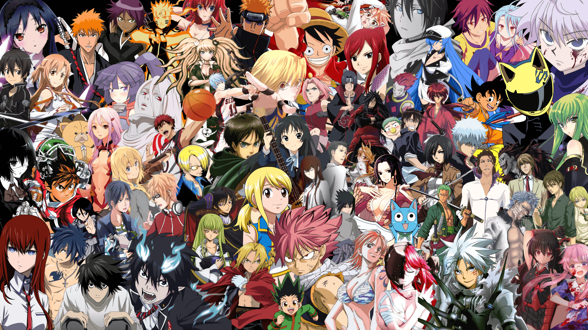

erased
29-year-old Satoru Fujinuma is sent back in time 18 years to prevent the events leading to his mother's death, which began with a series of kidnappings

all
a style of animation originating in Japan that is characterized by stark colorful graphics depicting vibrant characters in action-filled plots often with fantastic or futuristic themes.

bleach
Bleach (stylized as BLEACH) is a Japanese anime television series based on Tite Kubo's original manga series of the same name.